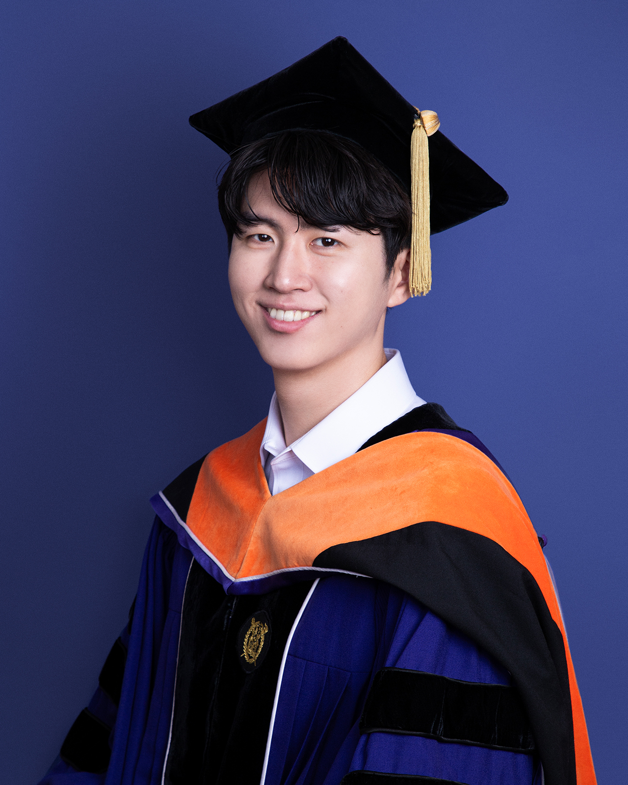
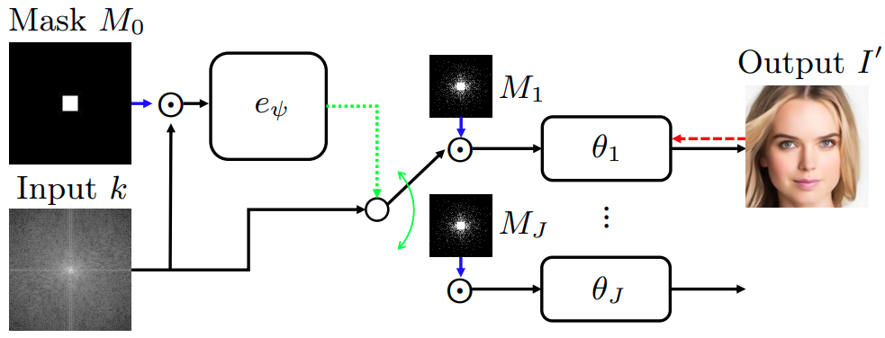
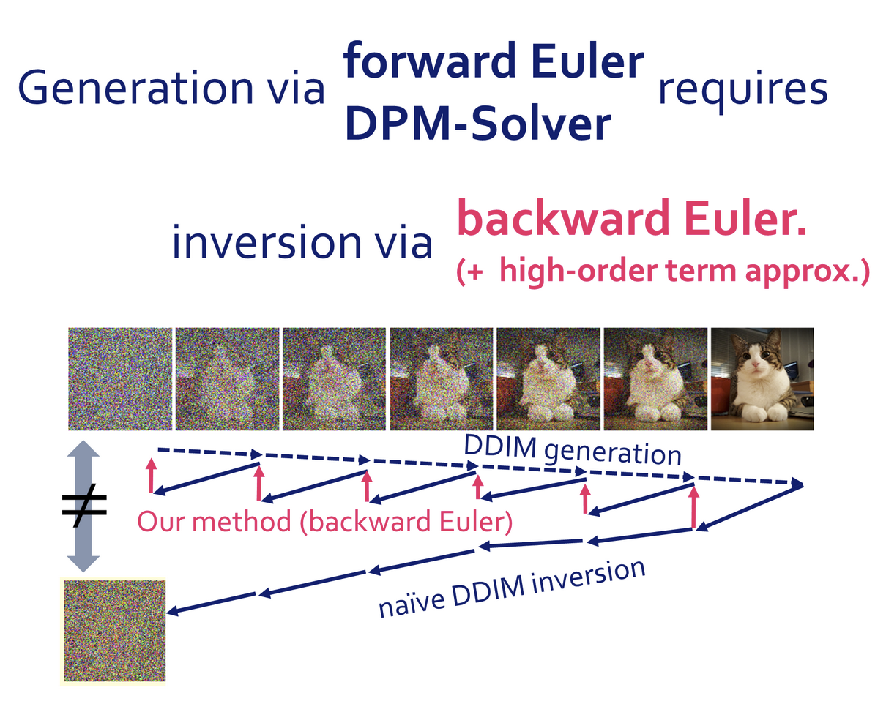
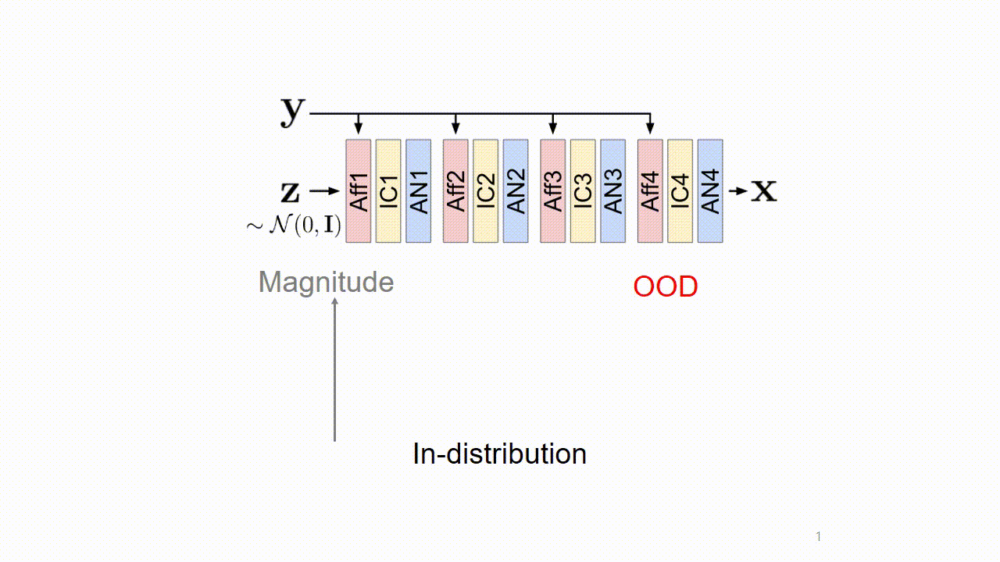

Seongmin Hong
I am a postdoctoral researcher at the Institute of New Media and Communications (INMC) at Seoul National University (SNU), currently fulfilling my mandatory alternative military service.
I recently earned my Ph.D. from the Department of Electrical and Computer Engineering at Seoul National University, where I was part of the Intelligent Computational Imaging Lab (Prof. Se Young Chun). My research leverages large-scale first-order optimization in Computer Vision and Computational Imaging, focusing on novel algorithms for Generative Model Inversion and differentiable formulations for discrete data. My doctoral thesis was awarded the Distinguished Ph.D. Dissertation Award.

News
- Apr 2026 DiffBMP accepted to CVPR 2026!
- Dec 2024 Gradient-free Decoder Inversion paper presented at NeurIPS 2024.
- Oct 2024 Adaptive Selection paper presented at ECCV 2024.
- Jun 2024 Exact Inversion of DPM-Solvers paper presented at CVPR 2024.
- Feb 2024 Awarded the Distinguished Ph.D. Dissertation Award from Seoul National University.
- Oct 2023 Normalizing Flows robustness paper presented at ICCV 2023.
- Jan 2023 Neural Diffeomorphic Non-uniform B-spline Flows paper presented at AAAI 2023.
Selected Publications
* denotes equal contribution.
2026
DiffBMP: Differentiable Rendering with Bitmap Primitives
Conference on Computer Vision and Pattern Recognition (CVPR), 2026
2024



2023

All Publications
-
Fidelity-Preserving Zero-Shot Diffusion Models for Highly Ill-Posed Inverse Problems in Lensless Imaging
Image and Vision Computing, 2025
-
Robust Watermarks for Audio Diffusion Models by Quadrature Amplitude Modulation
Pattern Recognition Letters, 2025
-
Compressed Depth Map Super-Resolution and Restoration: AIM 2024 Challenge Results
European Conference on Computer Vision Workshops (ECCV Workshop), 2024
-
Advanced Direction of Arrival Estimation Using Step-Learnt Iterative Soft-Thresholding for FMCW MIMO Radar
IET Radar, Sonar & Navigation, 2023
-
Efficient and Accurate Quantized Image Super-Resolution on Mobile NPUs: Mobile AI & AIM 2022 Challenge
European Conference on Computer Vision Workshops (ECCV Workshop), 2022
-
Efficient Single-Image Depth Estimation on Mobile Devices: Mobile AI & AIM 2022 Challenge
European Conference on Computer Vision Workshops (ECCV Workshop), 2022
-
Radar Signal Decomposition in Steering Vector Space for Multi-Target Classification
IEEE Sensors Journal, 2021